Boys II Men are one of the first and most popular R&B groups. They were a very prominent group in the early 90s and they had tremendous billboard success with singles such as “End of The Road”. Their claim to fame was their platinum selling debut album, “Cooleyhighharmony”.
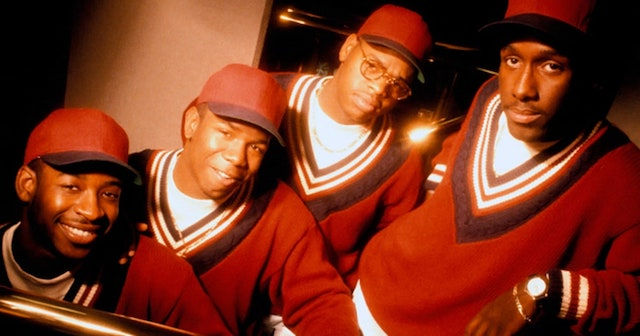Usher was very popular in the early 2000s. He was very influential in the party themed R&B movement that was very prominent in the early 2000s. The single that made Usher a household name was, “Yeah! (ft. Lil Jon and Ludacris)”. He made himself into an icon with singles like, “Dj Got Us Falling In Love Again” and “My Boo”.
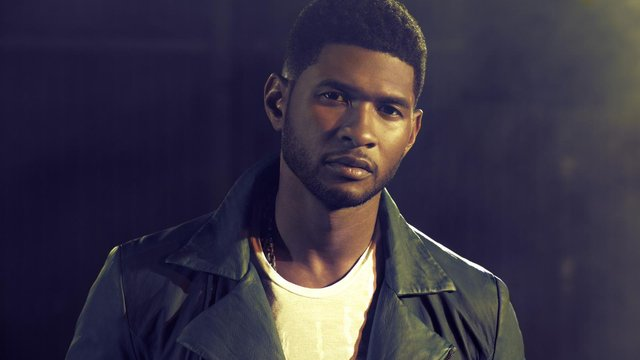The Weeknd is the currently the most popular R&B singer and he has had multiple number 1 hits and his most recent album is Starboy. His first number one singles were “The Hills” and “Can't Fell My Face” which were both part of the platinum selling album, “Beauty Behind The Madness”. The Weeknd's music is an homage to classic R&B as it is very romantic and lyrical similar to the style of Boyz II Men.
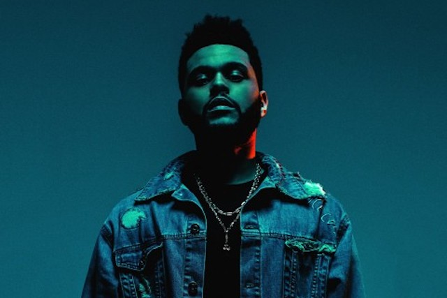N.W.A was an all star group of artists composed of Hip Hop Legends : Eazy E, Dr.Dre, Ice Cube, DJ Yella and MC Ren. Although their singles such as "Straight Outta Compton" are engraved into rap history, the real reason most people remember N.W.A is for their advocacy against the police brutality that was extremely prevalent at the time.
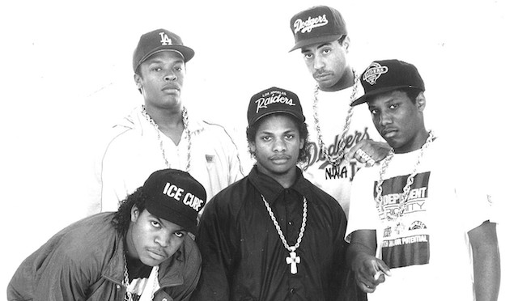Tupac (Tupac Shakur) is looked at as the King of West Coast rap. This is because of the west coast vibe he was able to capture through his music. He was also in a very large rivalry with Notorious B.I.G. Most of Tupac's biggest hits are from his monumental album "All Eyes One Me". Tupac Shakur died tragically on September 7, 1996 when he was shot four times while leaving the MGM Grand after having watched a boxing match.
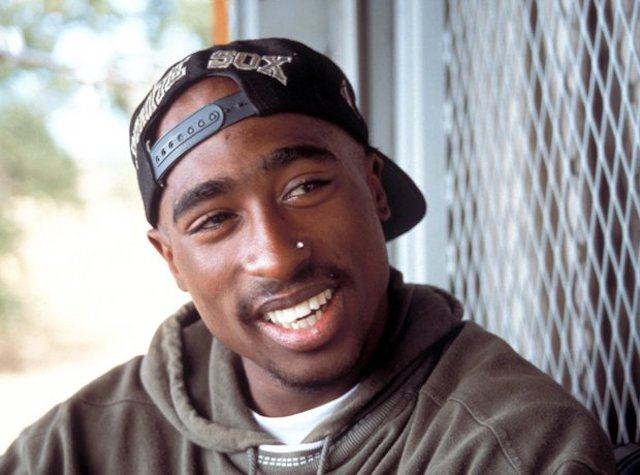Notorious B.I.G (Biggie Smalls) is looked as the King of East Coast rap. Much like Tupac, Biggie had a very east coast sound in his music. The East vs West rivalry is what pitted Biggie and Tupac against each other. Biggie was also shot a few months after Tupac was shot and he died on March 9, 1997. Biggie's biggest hits were "Juicy", "Big Poppa" and "Hypnotize".
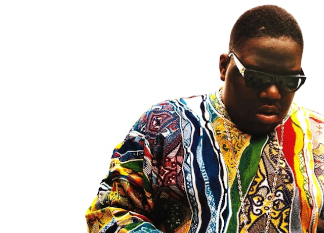Jay Z is one of the most iconic New York Rappers to ever live. He has had many hits such as "Empire State of Mind" and "Run This Town". However, Jay Z is also a very frugal businessman and has his own label company named Roc-A-Fella Records.
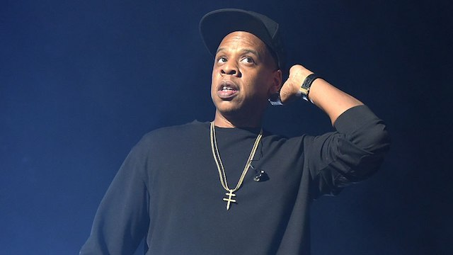Kanye West is an iconic Chicago who as been a huge catalyst in many pop culture events. Wether it be through his amazing music, his urban clothing line or even his signature shoe. Kanye has proven time and time again that he is a pop culture icon.
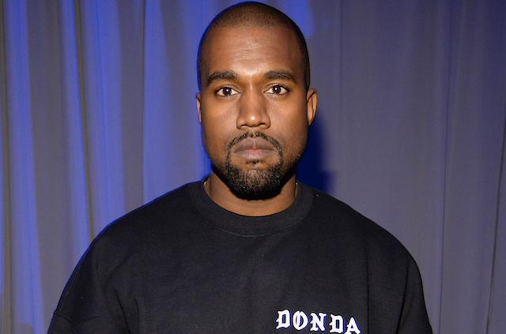Eminem is known for his amazing cadences and his incredible rhyming ability. He is looked at as one of the greatest lyricists off all time. Some of Eminem's greatest hits are "Lose Yourself" and "Rap God".
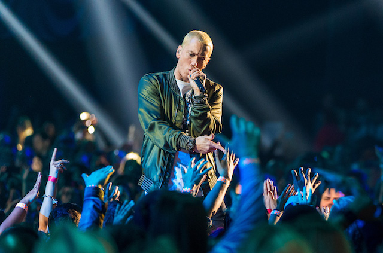Drake is known as the 6 God because he is one of the people who put Toronto on the pop culture map. Drake is a record breaking artist who has been on the Billboard Charts for many consecutive years now. Drake has many hits such as "One Dance" and "Hotline Bling". Drake also has the record for most consecutive weeks on the billboard charts, which was a record previously held by The Beatles. Drake also has his own record label named OVO.
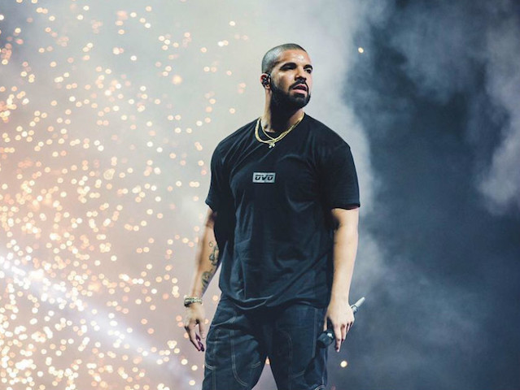Kendrick Lamar is known for his superior rapping ability and is hailed as one of the beat rappers of this generation. His most popular albums are the Grammy award wining "To Pimp A Butterfly" and his most recent album "DAMN.".
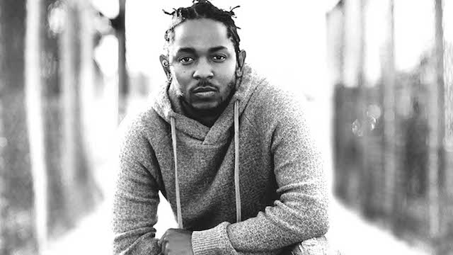Chance the Rapper is one of the most important artists of all time because he has proven that independant artists can also be successful. Chance the Rapper is one of the first independant rappers to win 3 Grammys. The project that earned him his Grammys is "Colouring Book".
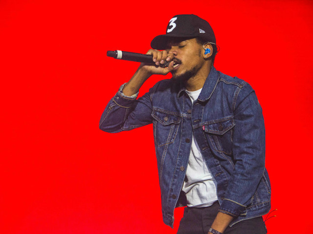